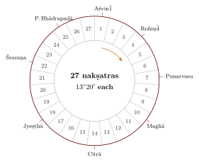

Chapter 4: The Nakṣatras: India’s Lunar Asterisms¶
4.1 Stations of the Moon¶
The Moon completes a circuit of the stars in about \(27\tfrac{1}{3}\) days (the sidereal month). An observer who notes, night by night, which group of stars the Moon is near will soon have a set of twenty-seven or twenty-eight “stations”. Several ancient peoples made such lists: the Indian nakṣatras, the Chinese xiu (“lodges”), and the Arabic manāzil al-qamar (“stations of the Moon”). In India the nakṣatras were the first frame of reference for the positions of the Moon and the Sun, and they have remained central to the calendar, to ritual and to astrology ever since.
The word nakṣatra in the Ṛgveda means simply “star” or “heavenly light”. By the later Vedic period it had acquired the technical sense of one of the twenty-seven or twenty-eight asterisms along the Moon’s path, each with a name, a presiding deity and a ritual character. In the Vedic texts the asterisms are groups of stars of unequal extent. In the siddhāntas they became twenty-seven equal divisions of the ecliptic, each of \(13^\circ 20'\) (\(800'\) of arc), each still associated with a principal star.
4.2 The Lists¶
4.2.1 The Vedic lists¶
The oldest complete lists are in the Yajurveda Saṃhitās and Brāhmaṇas, especially the Taittirīya Saṃhitā (4.4.10) and Taittirīya Brāhmaṇa, and in the Atharvaveda (19.7). These lists begin with Kṛttikā, the Pleiades, and give a deity for each asterism (Agni for Kṛttikā, Prajāpati for Rohiṇī, Soma for Mṛgaśiras, Rudra for Ārdrā, and so on). Some lists have twenty-seven members, others twenty-eight, the extra one being Abhijit. The names and deities differ in detail from the later standard list: Puṣya appears as Tiṣya, Āśleṣā as Āśreṣā, Mūla as Vicṛtau, Śravaṇa as Śroṇā, and the deities of a few asterisms differ.
4.2.2 The siddhānta list¶
In the siddhāntas, from the fifth century CE onwards, the list begins with Aśvinī, and the first point of Aśvinī is the starting point of the sidereal zodiac, the first point of the sign Meṣa (Aries). The change of starting point is discussed below. Table 4.1 gives the standard list.
| No. | Nakṣatra | Start | Deity | Usual junction star |
|---|---|---|---|---|
| 1 | Aśvinī | \(0^\circ\) | the Aśvins | \(\beta\) Arietis |
| 2 | Bharaṇī | \(13^\circ 20'\) | Yama | 35 or 41 Arietis |
| 3 | Kṛttikā | \(26^\circ 40'\) | Agni | \(\eta\) Tauri (Pleiades) |
| 4 | Rohiṇī | \(40^\circ\) | Prajāpati | \(\alpha\) Tauri (Aldebaran) |
| 5 | Mṛgaśiras | \(53^\circ 20'\) | Soma | \(\lambda\) Orionis |
| 6 | Ārdrā | \(66^\circ 40'\) | Rudra | \(\alpha\) Orionis (Betelgeuse) |
| 7 | Punarvasu | \(80^\circ\) | Aditi | \(\beta\) Geminorum (Pollux) |
| 8 | Puṣya | \(93^\circ 20'\) | Bṛhaspati | \(\delta\) Cancri |
| 9 | Āśleṣā | \(106^\circ 40'\) | the Serpents | \(\epsilon\) Hydrae |
| 10 | Maghā | \(120^\circ\) | the Fathers | \(\alpha\) Leonis (Regulus) |
| 11 | Pūrvaphalgunī | \(133^\circ 20'\) | Bhaga | \(\delta\) Leonis |
| 12 | Uttaraphalgunī | \(146^\circ 40'\) | Aryaman | \(\beta\) Leonis |
| 13 | Hasta | \(160^\circ\) | Savitṛ | \(\delta\) Corvi |
| 14 | Citrā | \(173^\circ 20'\) | Tvaṣṭṛ | \(\alpha\) Virginis (Spica) |
| 15 | Svāti | \(186^\circ 40'\) | Vāyu | \(\alpha\) Bootis (Arcturus) |
| 16 | Viśākhā | \(200^\circ\) | Indra and Agni | \(\alpha\) or \(\iota\) Librae |
| 17 | Anurādhā | \(213^\circ 20'\) | Mitra | \(\delta\) Scorpii |
| 18 | Jyeṣṭhā | \(226^\circ 40'\) | Indra | \(\alpha\) Scorpii (Antares) |
| 19 | Mūla | \(240^\circ\) | Nirṛti | \(\lambda\) Scorpii |
| 20 | Pūrvāṣāḍhā | \(253^\circ 20'\) | the Waters | \(\delta\) Sagittarii |
| 21 | Uttarāṣāḍhā | \(266^\circ 40'\) | the Viśvedevas | \(\sigma\) Sagittarii |
| 22 | Śravaṇa | \(280^\circ\) | Viṣṇu | \(\alpha\) Aquilae (Altair) |
| 23 | Dhaniṣṭhā (Śraviṣṭhā) | \(293^\circ 20'\) | the Vasus | \(\beta\) Delphini |
| 24 | Śatabhiṣaj | \(306^\circ 40'\) | Varuṇa | \(\lambda\) Aquarii |
| 25 | Pūrvabhādrapadā | \(320^\circ\) | Aja Ekapād | \(\alpha\) Pegasi |
| 26 | Uttarabhādrapadā | \(333^\circ 20'\) | Ahirbudhnya | \(\gamma\) Pegasi |
| 27 | Revatī | \(346^\circ 40'\) | Pūṣan | \(\zeta\) Piscium |
4.2.3 Abhijit¶
Abhijit, the twenty-eighth asterism of some Vedic lists, is usually identified with Vega (\(\alpha\) Lyrae), which lies about sixty degrees north of the ecliptic, far from the Moon’s path. Its presence in a lunar list is therefore odd, and it may reflect an older system in which bright stars marked the Moon’s general region rather than its exact path. The siddhāntas dropped Abhijit from the equal division of twenty-seven, though some later systems give it a narrow segment within Uttarāṣāḍhā and Śravaṇa for ritual and astrological purposes.

4.3 Junction Stars and Their Coordinates¶
Each nakṣatra of the siddhāntas has a principal or “junction” star (yogatārā), used for observing conjunctions of the Moon and planets with the asterism. The Sūryasiddhānta (chapter 8) and other texts give the position of each junction star by two coordinates, usually called dhruvaka and vikṣepa. These are not the ecliptic longitude and latitude of modern astronomy: the dhruvaka is the point at which the circle through the star and the celestial pole meets the ecliptic, and the vikṣepa is the distance of the star from the ecliptic measured along that circle. Burgess recognised this “polar” system in his commentary on the Sūryasiddhānta (Burgess 1860).
Identifying the junction stars with stars of modern catalogues has occupied scholars since the eighteenth century. The coordinates given in the texts are rounded, differ from one text to another, and in some cases were computed rather than observed. Pingree and Morrissey compared the coordinates in a range of texts and showed how uncertain some of the identifications are (Pingree and Morrissey 1989). For bright, isolated stars such as Aldebaran, Regulus, Spica, Antares and Altair the identification is secure; for faint or crowded asterisms (Bharaṇī, Āśleṣā, Viśākhā, Śatabhiṣaj) more than one candidate has been proposed. Identifications should therefore be quoted with their uncertainty, not as settled facts.
4.3.1 Stars near the Moon’s path¶
Several junction stars lie close enough to the ecliptic to be hidden (occulted) by the Moon from time to time, and to be approached closely by the planets: Aldebaran (Rohiṇī), Regulus (Maghā), Spica (Citrā) and Antares (Jyeṣṭhā) among the bright ones, and the Pleiades (Kṛttikā). The siddhāntas compute the conjunctions of the Moon and planets with the junction stars, using the stars’ coordinates. One configuration attracted special attention: the group of stars of Rohiṇī was imagined as a cart (śakaṭa), and the passage of a planet through it, the “splitting of Rohiṇī’s cart” (rohiṇīśakaṭabheda), was treated as a portent of disaster. The Sūryasiddhānta discusses which planets can pass through it, given their latitudes, and the omen literature describes its consequences, an example of the close interweaving of computation and divination (Burgess 1860; Varāhamihira 1981–1982).
4.3.2 The star catalogue of the Sūryasiddhānta¶
The eighth chapter of the Sūryasiddhānta is the nearest thing to a star catalogue in classical Sanskrit astronomy, and it shows both what the astronomers recorded and what they left unsaid (Burgess 1860). It gives the positions in a compressed form. For each nakṣatra it states the “portion” (bhoga) of the junction star, its distance from the beginning of its own division of \(13^\circ 20'\), in units of ten minutes of arc; adding the divisions already passed gives the star’s dhruva. Rohiṇī’s portion, for example, is 57 units, or \(9^\circ 30'\), so its dhruva is \(40^\circ + 9^\circ 30' = 49^\circ 30'\). A few positions are given instead by reference to a neighbour: Uttarāṣāḍhā lies in the middle of the division of Pūrvāṣāḍhā, Abhijit at its end, Śravaṇa at the end of Uttarāṣāḍhā, and Śraviṣṭhā where the third and fourth quarters of Śravaṇa meet. The latitudes (vikṣepa) follow in a separate list of whole and half degrees, from \(0^\circ\) for Puṣya, Maghā and Revatī to \(37^\circ\) north for Svāti and \(60^\circ\) north for Abhijit. Almost all the positions are round numbers: whole degrees or simple fractions, not the minutes of arc of an observing record.
The same chapter answers a question that the bare list leaves open: which star of a group is the junction star. Its rule is descriptive. The northern star of the pair is the junction star of the two Phalgunīs, the two Bhādrapadās and the two Āṣāḍhās, and of Viśākhā, Aśvinī and Mṛgaśiras; the middle star of Jyeṣṭhā, Śravaṇa, Anurādhā and Puṣya; the southern star of Bharaṇī, Kṛttikā, Maghā and Revatī; the eastern star of Rohiṇī, Punarvasu, Mūla and Āśleṣā; Hasta and Śraviṣṭhā are described by their western stars; for the rest the brightest star of the group is meant. A rule of this kind presupposes that the reader already knows the shape of each group in the sky, which is exactly the knowledge that has to be reconstructed today, and it is one reason why identifications differ for the faint and crowded groups.
Besides the junction stars, the chapter places a handful of bright stars away from the zodiac, chosen for their ritual and astrological importance: Agastya (Canopus) at the end of Mithuna, \(80^\circ\) south; Mṛgavyādha, the “deer-hunter” (Sirius), in the twentieth degree of Mithuna, \(40^\circ\) south; Agni and Brahmahṛdaya (the latter usually identified with Capella) in the twenty-second degree of Vṛṣabha, \(8^\circ\) and \(30^\circ\) north; Prajāpati five degrees east of Brahmahṛdaya, \(38^\circ\) north; and Apāṃvatsa and Āpas a little north of Citrā. It also gives the numerical form of the “splitting of Rohiṇī’s cart” described above: a planet in the seventeenth degree of Vṛṣabha with a southern latitude of more than two degrees passes through the cart. Canopus, low in the southern sky of north India, mattered because its heliacal rising in early autumn was associated with the end of the rains, and the Bṛhatsaṃhitā devotes a chapter to it (Chapter 15).
That chapter, on the “course of Agastya”, shows how a single star could join myth, ritual and computation. The first half of its twenty-one verses retells the deeds of the sage Agastya, who drank the ocean and humbled the Vindhya mountain, and describe the autumn scene at the star’s rising: the waters, muddied by the rains, become clear again, “like the hearts of the good”, and water poisoned by serpents becomes wholesome. The king is to offer a libation (argha) to the star in the southern quarter at the end of the night, as the darkness begins to break, with flowers, fruits, gems, cloth, a cow and a bull, and the star’s colour and brightness at its rising are read as omens for health, rain and harvest. But one verse is astronomical. The learned, Varāhamihira says, should announce the date of the first appearance for each place by calculation; at Ujjayinī it falls when the true Sun is still seven degrees short of Kanyā, at a longitude of about \(143^\circ\). At the end of the chapter he records an older rule, introduced with “it is said” (kila): the star is seen when the Sun is in Hasta, and sets when the Sun reaches Rohiṇī.
The two rules can be compared with the sky. Canopus never rises more than about \(14^\circ\) above the horizon at Ujjain, so its first visibility before dawn depends on how dark the sky must be and how high the star must stand to be seen. A modern computation for the sixth century, assuming that the star becomes visible when it is two to six degrees high while the Sun is ten to fourteen degrees below the horizon, puts the first morning appearance when the Sun’s sidereal longitude (counted from a zero point that places Spica at \(180^\circ\)) is between about \(138^\circ\) and \(151^\circ\). Varāhamihira’s \(143^\circ\) falls well within this range, and his insistence on computing the date separately for each place is correct, since the star’s altitude, and with it the date of first visibility, changes quickly with latitude. The older rule, with the Sun in Hasta (\(160^\circ\) to \(173^\circ 20'\)), would put the first appearance at Ujjain between about one and five weeks too late.
A second, independent star list entered Sanskrit with the astrolabe (Chapter 11). The rete of an astrolabe carries pointers for bright stars, and the user must know where they are. Malayendu Sūri’s commentary on Mahendra Sūri’s Yantrarāja, written in the late fourteenth century, accordingly gives Persian and Sanskrit names for thirty-two stars, with data for setting them on the instrument. These stars and their positions came from the Islamic tradition, and so largely from Ptolemy’s catalogue, not from the Sūryasiddhānta, and they include stars far from the zodiac that had no place in the nakṣatra system. From the fourteenth century, therefore, two star lists of different origin coexisted in Sanskrit, a small instance of the meeting of traditions described in Chapter 11.
4.3.3 Reading the coordinates: a worked example¶
Because the coordinates are polar (Section 4.3), a star far from the ecliptic can have a dhruva very different from its ecliptic longitude. Svāti, usually identified with Arcturus, is the clearest case. The Sūryasiddhānta gives it dhruva \(199^\circ\) and vikṣepa \(37^\circ\) north. Read naively as an ecliptic longitude, \(199^\circ\) would put Arcturus \(19^\circ\) east of Spica, at \(180^\circ\); in the sky the two stars have almost the same longitude.
The conversion follows the definition. With the Sūryasiddhānta’s obliquity of \(24^\circ\), the point of the ecliptic at \(199^\circ\) has a declination of \(-7^\circ 37'\) and a right ascension of \(197^\circ 28'\). The star lies on the same circle through the poles, \(37^\circ\) further north, at declination \(+29^\circ 23'\) and the same right ascension. Converting these equatorial coordinates into ecliptic ones in the usual way gives a longitude of \(182^\circ 42'\) and a latitude of \(+33^\circ 41'\). The same conversion for Citrā (dhruva \(180^\circ\), vikṣepa \(2^\circ\) south) gives \(180^\circ 49'\) and \(-1^\circ 50'\). In the text’s own coordinates, therefore, Arcturus is \(1^\circ 53'\) east of Spica and \(33^\circ 41'\) from the ecliptic. Computed from modern data for 500 CE, including the large proper motion of Arcturus, it was \(0^\circ 23'\) east of Spica and \(31^\circ 46'\) from the ecliptic. The text is thus about \(1\tfrac{1}{2}^\circ\) out in longitude and \(2^\circ\) in latitude, an accuracy typical of the list as a whole.
| Text (polar) | Converted | Modern, 500 CE | |||||
| Name | Star | dhruva | vikṣepa | long. | lat. | long. | lat. |
| Rohiṇī | Aldebaran | \(49^\circ 30'\) | \(-5^\circ\) | \(48^\circ 06'\) | \(-4^\circ 48'\) | \(46^\circ 43'\) | \(-5^\circ 34'\) |
| Brahmahṛdaya | Capella | \(52^\circ\) | \(+30^\circ\) | \(60^\circ 41'\) | \(+28^\circ 50'\) | \(58^\circ 48'\) | \(+22^\circ 51'\) |
| Mṛgavyādha | Sirius | \(80^\circ\) | \(-40^\circ\) | \(76^\circ 18'\) | \(-39^\circ 51'\) | \(81^\circ 18'\) | \(-39^\circ 16'\) |
| Punarvasu | Pollux | \(93^\circ\) | \(+6^\circ\) | \(92^\circ 52'\) | \(+6^\circ 00'\) | \(90^\circ 25'\) | \(+6^\circ 34'\) |
| Maghā | Regulus | \(129^\circ\) | \(0^\circ\) | \(129^\circ 00'\) | \(0^\circ 00'\) | \(126^\circ 53'\) | \(+0^\circ 24'\) |
| Citrā | Spica | \(180^\circ\) | \(-2^\circ\) | \(180^\circ 49'\) | \(-1^\circ 50'\) | \(180^\circ 49'\) | \(-1^\circ 57'\) |
| Svāti | Arcturus | \(199^\circ\) | \(+37^\circ\) | \(182^\circ 42'\) | \(+33^\circ 41'\) | \(181^\circ 12'\) | \(+31^\circ 46'\) |
| Jyeṣṭhā | Antares | \(229^\circ\) | \(-4^\circ\) | \(230^\circ 07'\) | \(-3^\circ 50'\) | \(226^\circ 44'\) | \(-4^\circ 22'\) |
| Abhijit | Vega | \(266^\circ 40'\) | \(+60^\circ\) | \(264^\circ 06'\) | \(+59^\circ 58'\) | \(262^\circ 10'\) | \(+61^\circ 49'\) |
| Śravaṇa | Altair | \(280^\circ\) | \(+30^\circ\) | \(282^\circ 33'\) | \(+29^\circ 54'\) | \(278^\circ 30'\) | \(+29^\circ 22'\) |
Table 4.2 extends the comparison to ten bright stars. Three features stand out. First, the conversion matters most for stars far from the ecliptic and away from the solstitial points: for Svāti it moves the longitude by more than \(16^\circ\), for Brahmahṛdaya by more than \(8^\circ\), while for Rohiṇī, Maghā and Citrā it changes little. Secondly, after conversion the longitudes of the bright zodiacal stars agree with the modern values to within one to four degrees, and the latitudes of those near the ecliptic to within a degree; the far northern and southern stars fare worse: Mṛgavyādha is five degrees out in longitude, and Brahmahṛdaya’s latitude is six degrees too large if the star is Capella. Thirdly, the errors differ from star to star by several degrees, so they cannot be removed by moving the zero point or by assuming another date; they look like the errors of rounded values taken from different sources or corrected at different times, which is also the conclusion suggested by the variation of the coordinates between texts (Pingree and Morrissey 1989).
One consequence concerns the modern ayanāṃśa. The Citrā-pakṣa definition adopted by the Calendar Reform Committee (below) places Spica at an ecliptic longitude of exactly \(180^\circ\). The Sūryasiddhānta’s \(180^\circ\) for Citrā is a polar longitude, which corresponds to an ecliptic longitude about \(49'\) larger. The modern convention was inspired by the text but does not reproduce it exactly, which illustrates the point made below: there is no uniquely “correct” sidereal zero point to be recovered from the sources.
4.4 From Kṛttikā to Aśvinī: Precession and the Zodiac¶
The equinoxes and solstices move westward among the stars by about \(1^\circ\) in 72 years, so the nakṣatra in which the Sun stands at a given season changes over the centuries. This explains why lists that begin the year at different asterisms may come from different periods, and it is the basis of the dating arguments discussed in Chapter 3.
4.4.1 The sidereal zodiac¶
Indian astronomers of the siddhānta period counted longitudes from a fixed point among the stars, the beginning of Aśvinī, which they took to be the same as the beginning of the sign Meṣa. This is a sidereal zodiac. The Greek and modern Western zodiac is tropical: it is counted from the vernal equinox, which moves against the stars. The difference between the two, the ayanāṃśa, grows by about \(50”\) a year.
The siddhāntas place the end of Revatī, and hence the beginning of Aśvinī and of the zodiac, close to the star \(\zeta\) Piscium, the junction star of Revatī. The vernal equinox coincided with this region of the sky around the fifth or sixth century CE. In other words, the classical astronomers fixed their sidereal zero point at about the place where the equinox stood in their own time. The exact year in which the two zodiacs “coincided” depends on the definition adopted and is debated.
4.4.2 The ayanāṃśa today¶
Different schools adopted different definitions of the sidereal zero point, and hence different values of the ayanāṃśa. The Calendar Reform Committee of 1955 recommended, for religious calendars, the definition associated with N. C. Lahiri (the “Citrā-pakṣa” ayanāṃśa), in which the star Citrā (Spica) has a sidereal longitude of exactly \(180^\circ\) (Calendar Reform Committee 1955). On this definition the ayanāṃśa was about \(23^\circ 51'\) in 2000 and about \(24^\circ 12'\) in 2025. Other definitions in use among astrologers (associated with B. V. Raman and K. S. Krishnamurti, among others) differ from it by up to about a degree and a half. These differences are matters of convention, not of observation: there is no physically privileged sidereal zero point.
The practical consequence is that the Indian solar months and the dates of solar festivals have drifted against the seasons. Makara Saṅkrānti, the Sun’s entry into sidereal Capricorn, falls today on 14 or 15 January, more than three weeks after the winter solstice that it once marked (Chapter 13).
4.5 Nakṣatras and Signs¶
When the twelve signs of the zodiac (rāśis) entered India with Greek astrology (Chapter 5), the two divisions of the ecliptic were combined. A sign of \(30^\circ\) contains \(2\tfrac{1}{4}\) nakṣatras, or nine quarters (pādas) of \(3^\circ 20'\), and since both systems start from the same point, the beginning of Aśvinī and of Meṣa, a sign begins at a nakṣatra boundary every \(120^\circ\), that is, at the beginnings of Meṣa, Siṃha and Dhanus; the other signs begin at the boundary of a quarter. Table 4.3 shows the correspondence, which follows by simple arithmetic.
| Sign | Western | Nakṣatras contained |
|---|---|---|
| Meṣa | Aries | Aśvinī; Bharaṇī; Kṛttikā 1 |
| Vṛṣabha | Taurus | Kṛttikā 2–4; Rohiṇī; Mṛgaśiras 1–2 |
| Mithuna | Gemini | Mṛgaśiras 3–4; Ārdrā; Punarvasu 1–3 |
| Karka | Cancer | Punarvasu 4; Puṣya; Āśleṣā |
| Siṃha | Leo | Maghā; Pūrvaphalgunī; Uttaraphalgunī 1 |
| Kanyā | Virgo | Uttaraphalgunī 2–4; Hasta; Citrā 1–2 |
| Tulā | Libra | Citrā 3–4; Svāti; Viśākhā 1–3 |
| Vṛścika | Scorpio | Viśākhā 4; Anurādhā; Jyeṣṭhā |
| Dhanus | Sagittarius | Mūla; Pūrvāṣāḍhā; Uttarāṣāḍhā 1 |
| Makara | Capricorn | Uttarāṣāḍhā 2–4; Śravaṇa; Dhaniṣṭhā 1–2 |
| Kumbha | Aquarius | Dhaniṣṭhā 3–4; Śatabhiṣaj; Pūrvabhādrapadā 1–3 |
| Mīna | Pisces | Pūrvabhādrapadā 4; Uttarabhādrapadā; Revatī |
The Sanskrit names of the signs are translations of the Greek ones (Meṣa, “ram”, for Aries; Vṛṣabha, “bull”, for Taurus; Mithuna, “couple”, for Gemini; and so on), and the Greek names themselves were also used in Sanskrit for a time (Chapter 5). Because the Indian signs are sidereal, they no longer coincide with the Western tropical signs of the same names: the Sun now enters sidereal Meṣa around 14 April, about three and a half weeks after it enters tropical Aries at the March equinox.
4.6 Finding the Moon’s Nakṣatra¶
Given the Moon’s sidereal longitude, its nakṣatra and quarter follow by division:
For example, if the Moon’s sidereal longitude is \(200^\circ 45'\), then \(200^\circ 45' / 13^\circ 20' = 15.06\), so the Moon is in the sixteenth nakṣatra, Viśākhā, which begins at \(200^\circ\); it is \(45'\) into it, in the first quarter. Since the Moon moves on average about \(13^\circ 10'\) a day relative to the stars, it will leave Viśākhā, \(12^\circ 35'\) further on, in a little under a day. The almanac gives, for each day, the nakṣatra current at sunrise and the time at which it ends, computed from the Moon’s true (not mean) motion; because that motion varies between about \(12^\circ\) and \(15^\circ\) a day, a nakṣatra can last from about 21 to 27 hours.
4.7 Uses of the Nakṣatras¶
4.7.1 Calendar and ritual¶
The nakṣatra of the Moon on a given day is one of the five elements of the almanac (pañcāṅga), and the names of the lunar months derive from the nakṣatras near which the full moon falls: Caitra from Citrā, Vaiśākha from Viśākhā, Jyaiṣṭha from Jyeṣṭhā, Āṣāḍha from Āṣāḍhā, Śrāvaṇa from Śravaṇa, Bhādrapada from Bhādrapadā, Āśvina from Aśvinī, Kārttika from Kṛttikā, Mārgaśīrṣa from Mṛgaśiras, Pauṣa from Puṣya, Māgha from Maghā, and Phālguna from Phalgunī. Vedic ritual texts prescribe particular nakṣatras for installing the sacred fires and for other rites, and the domestic ritual manuals (gṛhyasūtras) prescribe them for marriage and other life-cycle rites.
4.7.2 The nakṣatras in Vedic ritual¶
The Brāhmaṇas discuss at length under which nakṣatra the sacred fires should be installed (agnyādheya). The Śatapatha Brāhmaṇa considers the Kṛttikās, Rohiṇī, Mṛgaśīrṣa, the Phalgunīs, Hasta and Citrā, giving mythological reasons for and against each; the debate shows both that the nakṣatras were observed and named and that their use was governed by ritual reasoning rather than by astronomy. The Taittirīya Brāhmaṇa prescribes offerings to each nakṣatra and its deity (the nakṣatreṣṭi). In this way the asterisms became a calendar of ritual opportunities long before they became a coordinate system.
4.7.3 Personal life¶
The nakṣatra occupied by the Moon at a person’s birth, the janmanakṣatra, has long been important in Indian personal life. In parts of south India birthdays are still celebrated on the day the Moon returns to the birth nakṣatra rather than on the solar date, and the first syllable of a child’s name was traditionally chosen according to the quarter (pāda) of the birth nakṣatra. Each nakṣatra is divided into four pādas of \(3^\circ 20'\), giving 108 in all; in astrology each pāda corresponds to one ninth of a sign (navāṃśa). The use of the nakṣatras in electing auspicious times (muhūrta), in the planetary periods (daśā) of horoscopy and in matching horoscopes for marriage belongs to astrology and is described in Chapter 15.
4.7.4 Seasons and agriculture¶
Because the Sun spends about \(13\tfrac{1}{2}\) days in each nakṣatra, the Sun’s nakṣatra provides a fine division of the solar year, and several regional agricultural calendars use it. In Kerala the solar nakṣatra periods (Malayalam ñāṟṟuvela) are traditional markers for sowing and for the expected monsoon rains, the period of the Sun in Ārdrā (Tiruvātira) in late June being associated with the rains. Proverbs linking rain in particular nakṣatras with good or bad harvests are found in many Indian languages, among them the Bengali sayings ascribed to Khanā and the Hindi sayings ascribed to Ghāgh and Bhaḍḍarī (Volume 15, Kṛṣi and Jīva Vijñāna). The Bṛhatsaṃhitā of Varāhamihira includes nakṣatra-based rules for forecasting rain (Chapter 15). Such traditions record long experience of the monsoon calendar, but they were never systematically tested, and the folk beliefs attached to them (for example, that rain in Svāti produces pearls in oysters) are poetic conventions rather than observations.
The sky-knowledge of Adivasi and other rural communities outside the Sanskrit and Tamil written traditions is a different matter. Many communities have their own names and stories for the Pleiades, Orion, the Great Bear and the Milky Way, and use them to tell the time at night and to mark the seasons of sowing and harvest. This knowledge has been documented systematically only recently and for a few regions, notably among the Gond, Kolam and Banjara of central India; it is described in Volume 23, Jana–Jāti, and is not treated further in this volume, which follows the written astronomical tradition.
4.7.5 Myth¶
The Purāṇas and the Mahābhārata tell that the nakṣatras were twenty-seven daughters of Dakṣa, all married to the Moon (Soma). The Moon favoured Rohiṇī; the other wives complained to their father, whose curse made the Moon waste away, and the curse was softened so that the Moon waxes again each month. The story ties the Moon’s monthly circuit of the asterisms to its waxing and waning: the Moon wastes and recovers because of its conduct towards its twenty-seven wives.
4.8 The Seven Sages and Their “Motion”¶
Not every star that mattered lay on the Moon’s path. From the later Vedic period the seven bright stars of the Great Bear (Ursa Major) were identified with the Seven Sages (saptarṣi): Marīci, Vasiṣṭha, Aṅgiras, Atri, Pulastya, Pulaha and Kratu. Beside Vasiṣṭha (Mizar) shines the faint Arundhatī (Alcor), named after his wife. The domestic ritual manuals tell the bride and groom to look at the pole star (dhruva) and at Arundhatī after the wedding, as emblems of constancy and fidelity; the older history of the asterism in the Ṛgveda is discussed in Volume 1, Veda Prakāśa.
A doctrine found in the Purāṇas, and set out by Varāhamihira in the chapter of the Bṛhatsaṃhitā on “the course of the Seven Sages” (saptarṣicāra) on the authority of Vṛddhagarga, holds that the Sages move through the nakṣatras, staying a hundred years in each, so that they complete the circuit of twenty-seven in 2700 years. Varāhamihira states that the Sages were in Maghā when Yudhiṣṭhira ruled the earth, and that the Śaka era began 2526 years after that king’s time (Varāhamihira 1981–1982). This would place Yudhiṣṭhira in the twenty-fifth century BCE, not at the beginning of the Kali age in 3102 BCE, where other traditions put the events of the Mahābhārata: the traditional chronologies of the epic age were themselves not consistent (Chapter 14).
The Purāṇas define the Sages’ “position” as the nakṣatra that lies on a line through the two stars of the group that rise first, but no such motion exists. The stars of the Great Bear share in the slow precessional shift of all the stars, about one degree in seventy-two years, so that such a line would pass from one nakṣatra of \(13^\circ 20'\) to the next in roughly 960 years, not a hundred; otherwise their places among the nakṣatras are fixed. The siddhānta astronomers did not include the Sages’ motion in their computations. The doctrine belongs to the omen and chronological literature, where it served as a measure of long periods.
It also became an era. In Kashmir and the neighbouring hill states years were counted in the Saptarṣi or Laukika (“popular”) era, in cycles of a hundred years corresponding to the Sages’ stay in one nakṣatra. The hundreds were usually omitted, so that a date gives only the year within the current century. The era’s epoch corresponds to 3076 BCE, and Kalhaṇa’s chronicle of Kashmir, the Rājataraṅgiṇī, completed in the Laukika year [42]24 (1148–49 CE), dates its events by it (Sewell and Dikshit 1896). A computed epoch and an imaginary motion thus supplied a working calendar for one of India’s most important historical works.
4.9 The Lunar Mansions in Other Cultures¶
The Chinese system of twenty-eight lodges (xiu) is attested from at least the fifth century BCE. Its divisions are unequal and are measured along the celestial equator from “determinative stars”. Several xiu share stars with nakṣatras (the Pleiades, Spica, Antares), but many do not. The Arabic system of twenty-eight lunar stations (manāzil) appears in pre-Islamic Arabian weather lore and was later systematised; its relation to the Indian list has been debated, and an Indian contribution to its later astronomical form has been suggested but not established. The question whether the Indian and Chinese systems share a common origin, influenced one another, or arose independently was argued vigorously in the nineteenth century and is not settled; the evidence is compatible with independent development from the same observable fact, the Moon’s monthly circuit of the stars (Pingree 1981).
In the eleventh century al-Bīrūnī described the Indian lunar stations at length in his book on India, comparing them with the Arabic stations (al-Bīrūnī 1888). Indian nakṣatra lore also travelled with Buddhism to Central and East Asia, through texts such as the Śārdūlakarṇāvadāna (Section 3.7).
Further Reading¶
For the identifications of the junction stars see Pingree and Morrissey (1989) and Burgess (1860); for the Vedic lists, Ōhashi (1993); for the ayanāṃśa question, Calendar Reform Committee (1955); for the place of the nakṣatras in the calendar, Sewell and Dikshit (1896).